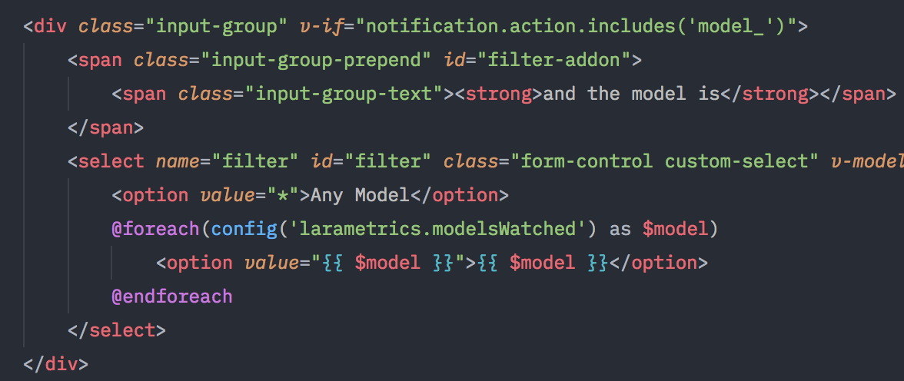

a tecnologia tem cescido a cada dia pois a tecnologia esta presente em nossas vidas, pirncipalmento com a pandemia

Anna trabalha com o desenvolnimento a 5 anos onde trabalha para um empresa no exteriro.
Agora que você já entendeu o que é a programação, "se define a sua linguagem.
e o significado de código fonte"
é importante também saber que muito além de um simples processo de escrita, a programação envolve um misto de outras habilidades
cognitivas, como o raciocínio lógico, habilidades matemáticas
a capacidade de abstração e de lidar com diferentes tipos de dados.
Quando começa-se a estudar programação, a primeira coisa que se aprende é a criar algoritmos básicos, que são como receitas, para que a partir de um passo a passo
uma tarefa possa ser executada.
E esse algoritmo é desenvolvido a partir de tentativas e erros baseados no resultado em que se quer chegar e em como se pode alcançá-lo.
Um exemplo disso é quando pede para uma pessoa ir a tal padaria, você vai precisar saber onde ela se localiza para passar as instruções adequadas, como:
ande reto até a rua tal (e você precisará saber o nome da rua) vire a direita (e você precisará ter noções de direção) e assim por diante.